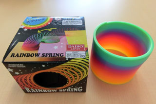

バネの自由落下における最下端の位置変化について
あるWebサイトを見ていたら，バネの自由落下でとてもおもしろいビデオがアップされていることを知りました．
それは，
バネを伸ばした状態で自由落下させると，最下端が静止している
と言うものです．
これこそ，科学の不思議さをしめすとてもおもしろい現象ですね．
自分でもテストしてみたくて，スリンキーなるおもちゃを探したのですが，なかなか見つかりません．
確か．．小学生頃に遊んだ記憶が．．．
すると，100円ショップにプラスチック商品ですがありました！

プラスチック商品なので，うまくいくか不安でしたが，手元のカシオのデジカメで撮影してみました．
カメラ：CASIO EX-ZR100
モード：240 fps
見事に！最下端が静止していることがわかります．
では．．．なぜ最下端が静止するのでしょう？
何となくとしては，
バネ自体は重力により自由落下する
バネ最下端はバネが縮む力で上に行こうとする
このバランスがちょうど釣り合って，静止する，と言うことになると主ますが，これをきちんと数学で解いてみましょう．